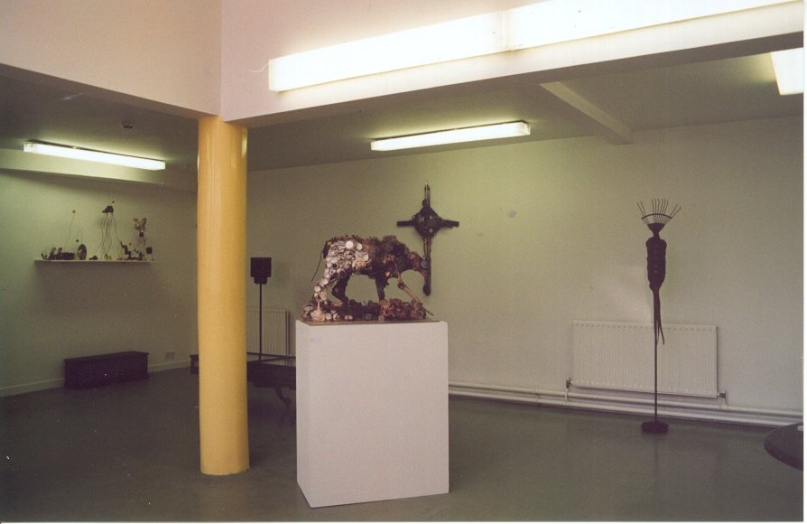

Art Centre Set Up
The Art Centre houses a gallery, workspace and administrative offices. Although the offices are in Clonmel it is important to note that many of the activities will take place in venue's around south Tipperary as part of the centres outreach program. It aims to raise awareness and attendance at arts events through out the county and to increase understanding and appreciation of the arts in general. The centre's objective is to act as a co-ordinating body for the wealth of artistic activity within south Tipperary.
Many of those involved in the arts in the region work in isolation so the art centre acts as a focus and as a support system for these people.

The Gallery space at the Art Centre